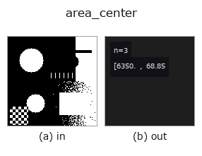

features op• 데이터 종류: region → match
• 호출: fullseye.apply(img, "area_center", a=0.5, b=0.5)(2-D 는 이미지 1 장 + 스칼라 노브 2 개 a,b∈[0,1] 모델)
• HALCON 대응: area_center(의미·매개변수는 HALCON 레퍼런스가 참고가 됩니다)
• GPU: 없음(CPU 참조 구현만)

*그림은 128×128 합성 입력에서 실제로 실행한 출력. 왼쪽이 입력, 오른쪽이 출력. 점군은 위에서 본 산점도(밝기 = z), 1-D 열은 꺾은선, 볼륨은 z 방향 최대값 투영, 동영상은 가운데 프레임, 복소 영상은 진폭이며, 그림이 되지 않는 반환값은 값 자체를 표시한다.*
*노브 a 는 출력을 바꾸지 않는다(실측: 0.1 / 0.5 / 0.9에서 동일).*
*노브 b 는 출력을 바꾸지 않는다(실측: 0.1 / 0.5 / 0.9에서 동일).*
단계(앞에 오는 op → 이 op, 왼쪽에서 오른쪽으로):
▸ area_center: 단계 (문서 사이트)
영역의 면적과 무게중심을 3 성분 벡터 (면적 [화소 수], 무게중심 행 [px], 무게중심 열 [px]) 로 돌려준다. HALCON 의 area_center（Area and center of regions.）와 같은 3 값·같은 단위.
스칼라 하나로는 (Area, Row, Column) 을 나타낼 수 없으므로 match 형(1 차원 벡터, ncc_locate 와 같은 모양)으로 돌려주는 점이 다른 region 특징 op 와 다르다. 영역이 비어 있으면 (0, (H-1)/2, (W-1)/2)(면적 0·중심 = 영상 중심의 화소 좌표)를 돌려주는 fail-soft 사양.
★2026-09-26 까지는 3 성분 모두 영상 크기로 나눈 0〜1 값(면적비·정규화 무게중심)을 돌려주었다. 지금은 화소 단위(docs/hardening/dimensional-features-were-normalised.md). 정규화가 필요하면 면적을 H*W, 행을 H-1, 열을 W-1 로 나눈다.
a, b 는 사용하지 않는다.
??:
FsValueError: ???? NaN / inf? ???? ??.
• 샘플 데이터 카탈로그(DL URL / 라이선스) —— 2-D 는 skimage.data(BSD/public)+ 합성, 3-D 는 실데이터 소스(Stanford/PDS 등)의 DL URL.
• 연산자의 내력·참고문헌 —— 이 연산자 족의 바탕이 된 연구/기법의 출처.
• 알고리즘의 정전(저자·연도)과 용도는 위의 패밀리 사용 가이드에 적혀 있습니다.
아래 프로그램은 실제로 실행됨을 확인했습니다(그림과 같은 입력). Studio 도움말에서는 이 블록이 버튼이 되어 즉시 불러와 실행할 수 있습니다.
threshold 0.50 0.50 area_center 0.50 0.50
• example_inner_diameter_mm — py -3.11 examples/example_inner_diameter_mm.py
• gallery2d_features — py -3.11 examples/gallery2d_features.py
match 를 입력으로 받는 것)features)effective_bit_depth · blob_count · area_frac · count_contours · total_length · vol_count · sk_euler · sk_entropy_feat
*Provenance: ops.py — 2D 연산자 레지스트리. 이 op 노트는 tools/opdocs.py md 가 자동 생성합니다(직접 편집하지 마세요).*
© 2026 Kazufumi Furuse — Fullseye operator documentation. Licensed under Apache-2.0.